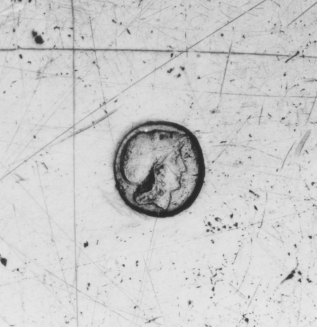

A punch without a name
One of four additional views shows a round impression. The maker field remains empty.
The full dish and the impression are separate photographs from 48.187.173. The impression is enlarged here; the two photographs are not shown at a shared physical scale.


- Maker
- Not named
- Place
- French, Paris
- Date
- 1697–1704
- Image sets
- .172: 1 view / .173: 5 views
Different work, different marks
- Makerregistered initials and personal device
- Chargetax agent mark on work in progress
- Wardenassay and yearly mark
- Dischargeduty paid
- Countermarklater check of tax and marks
The Met dates both dishes 1697–1704 and identifies their culture as French, Paris. Neither record names a maker. The image sets differ: .172 has only its primary view; .173 has four additional views, including this detail.
The Getty's guide to Parisian silver describes five kinds of mark with different functions. This worn impression is visible, but neither the image nor the Met entry identifies its type. It is a clue to follow, not a maker's name. Read the Getty guide to stamps and marks. Met photographs are Public Domain.